Документы
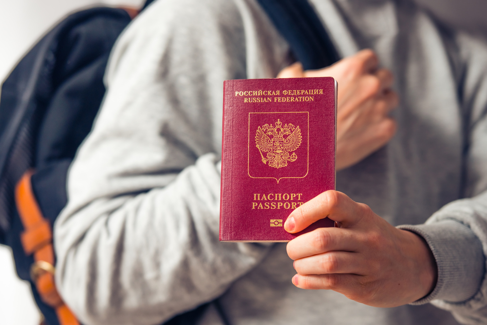
ПЕРЕД ОТЪЕЗДОМ
Проверьте наличие необходимых для поездки документов:
Заграничный паспорт (паспорт должен быть действителен в течение не менее шести месяцев от даты окончания поездки); ксерокопию загранпаспортов (могут пригодиться при утрате загранпаспорта и в случае иных непредвиденных обстоятельств); авиабилеты или маршрут/квитанции электронного билета; ваучер; страховой медицинский полис.
Дети
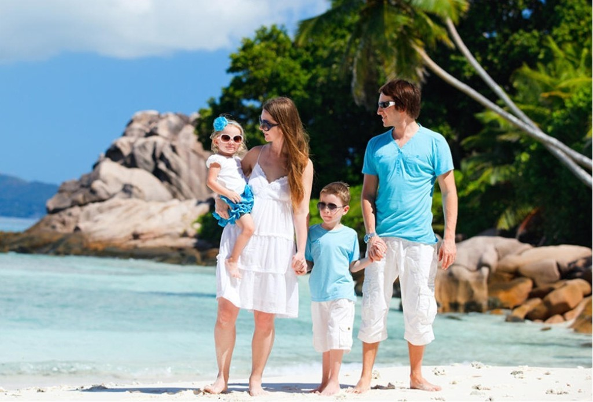
В случае путешествия с детьми:
Несовершеннолетний гражданин Российской Федерации, следующий совместно хотя бы с одним из родителей, ДОЛЖЕН ВЫЕЗЖАТЬ ИЗ РОССИЙСКОЙ ФЕДЕРАЦИИ ТОЛЬКО ПО СВОЕМУ ЗАГРАНИЧНОМУ ПАСПОРТУ.
Без необходимости оформления для ребенка отдельного заграничного паспорта несовершеннолетний гражданин Российской Федерации до 14 лет может выехать совместно хотя бы с одним из родителей, если он вписан в ОФОРМЛЕННЫЙ ДО 01 МАРТА 2010 ГОДА заграничный паспорт выезжающего вместе с ним родителя. В паспорт родителя в этом случае ОБЯЗАТЕЛЬНО должна быть вклеена фотография ребенка, независимо от его возраста, на которой должна стоять печать паспортно-визовой службы. Отсутствие фотографии или печати является основанием для отказа ребенку в пересечении границы. Выезд из Российской Федерации несовершеннолетних детей, сведения о которых внесены в паспорта сопровождающих их родителей, оформленные до 01 марта 2010 года, осуществляется по срокам действия этих паспортов.
На заграничные паспорта, оформленные после 1 марта 2010 года, распространяются нормы Постановления Правительства РФ №13 от 19 января 2010 года о том, что внесение сведений о детях в паспорт, удостоверяющий личность родителя, не дает права ребенку на выезд за пределы территории Российской Федерации без документа, удостоверяющего личность гражданина Российской Федерации за пределами территории Российской Федерации.
При следовании несовершеннолетнего российского гражданина через государственную границу Российской Федерации совместно с одним из родителей, предъявлять письменное согласие второго родителя не требуется, если только от него ранее в пограничные органы не поступало заявления о своем несогласии на выезд из Российской Федерации своих детей.
Если у несовершеннолетнего ребенка и выезжающего совместно с ним родителя разные фамилии, то рекомендуем взять с собой нотариально заверенную копию свидетельства о рождении — для подтверждения родства. На практике отсутствие такого подтверждения служило основанием для отказа ребенку в пересечении границы.
Беременным женщинам, у которых роды предполагаются в течение ближайших четырех недель, необходимо представить письменное согласие врача на полет. Медицинское заключение должно быть оформлено не менее чем за неделю до даты перелета. В отсутствии документов сотрудники авиакомпании имеют полное право отказать в авиаперевозке или потребовать медицинского освидетельствования в аэропорту вылета. Перевозка беременной осуществляется при условии, что перевозчик не несет никакой ответственности перед Пассажиркой за последствия для нее, что удостоверяется ее гарантийным обязательством (распиской).
Багаж

Собирая багаж:
Рекомендуем все ценные вещи, документы и деньги положить в ручную кладь и взять с собой в самолет. В багаж следует упаковать все металлические острые и режущие предметы (маникюрные ножницы, пилочки для ногтей, перочинный ножик и т.п.), а также любые жидкости, гели и аэрозоли (за исключением, если в этом есть необходимость, детского питания и лекарств) - проносить подобные предметы в ручной клади ЗАПРЕЩЕНО.
Не забывайте собрать и взять с собой аптечку первой помощи, которая поможет Вам при легких недомоганиях, сэкономит Ваше время на поиски лекарственных средств и избавит от проблем общения на иностранном языке.
Прибытие
В РОССИЙСКОМ АЭРОПОРТУ ВЫЛЕТА/ПРИЛЕТА
Перед выездом в аэропорт рекомендуем получить дополнительную информацию о возможно произошедших изменениях в условиях вылета Вашего рейса, используя возможности сайта авиакомпании, выполняющей рейс, или по телефону ее справочной службы.
Рекомендуем заблаговременно, не позднее, чем за три часа до вылета рейса, прибыть к месту регистрации пассажиров для прохождения установленных процедур регистрации, оформления багажа, и выполнения требований, связанных с пограничным, таможенным, санитарно-карантинным, ветеринарным и другими видами контроля, установленными законодательством РФ.
Таможня в РФ
ТАМОЖЕННЫЙ КОНТРОЛЬ до начала путешествия
Если Вы не перемещаете через границу валюту и предметы, которые необходимо декларировать, то Вам следует проходить зону таможенного контроля по «Зеленому коридору».
Без предъявления документов и без внесения сведений о валюте в пассажирскую таможенную декларацию туристы имеют право вывезти наличную иностранную валюту и/или валюту Российской Федерации, а также дорожные чеки на сумму не более 10.000 долларов США. При вывозе физическими лицами иностранной валюты и/или валюты Российской Федерации в эквиваленте до 10.000 долларов США, либо дорожных чеков в сумме, превышающей 10.000 долларов США, эти суммы средств должны быть задекларированы в пассажирской таможенной декларации.
На денежные средства, вывозимые с помощью банковской карты, ограничений нет. Банковскую карту декларировать не требуется.ВНИМАНИЕ! ЗАПРЕЩЕНО на выезде и въезде! ПЕРЕМЕЩЕНИЕ КУЛЬТУРНЫХ ЦЕННОСТЕЙ, ОБЪЕКТОВ ДИКОЙ ФАУНЫ и ФЛОРЫ, находящихся под угрозой исчезновения, ОРУЖИЯ И БОЕПРИПАСОВ к нему БЕЗ РАЗРЕШЕНИЯ УПОЛНОМОЧЕННЫХ ОРГАНОВ.
Незаконное перемещение товаров или валюты через таможенную границу Российской Федерации или их недекларирование, либо недостоверное декларирование влечет за собой административную или уголовную ответственность.
ВНИМАНИЕ! ЗАПРЕЩЕНО на выезде и въезде! ПРИНИМАТЬ ОТ ПОСТОРОННИХ ЛИЦ чемоданы, посылки и другие предметы для перевозки на борту воздушного судна.
ТАМОЖЕННЫЙ КОНТРОЛЬ по окончанию путешествия
Если Вы не перемещаете через границу валюту и предметы, которые необходимо декларировать, то Вам следует проходить зону таможенного контроля по «Зеленому коридору».
Без уплаты таможенных пошлин можно ввозить в Российскую Федерацию товары для личного пользования на сумму не более 65 тысяч рублей, общим весом – не более 50 килограммов.
Физическое лицо не моложе 17 лет может ввозить без уплаты таможенных пошлин: до 3-х литров алкогольных напитков; 50 шт. сигар, 100 шт. сигарилл, 200 шт. сигарет, 0,25 кг табака; 250 граммов икры осетровых рыб в заводской упаковке.
При единовременном ввозе в Россию физическими лицами наличной иностранной валюты и/или валюты Российской Федерации, а также дорожных чеков, внешних и/или внутренних ценных бумаг в документарной форме в сумме, в эквиваленте превышающей 10.000 долларов США, сведения о ней необходимо внести в пассажирскую таможенную декларацию. Декларации также подлежат: вывозимые драгоценные металлы, камни, культурные ценности, государственные награды РФ, редкие животные и растения, наркотические, психотропные, сильнодействующие, ядовитые, радиоактивные вещества, химикаты, высокочастотные устройства, радиоэлектронные, транспортные средства, ядерные материалы, информация, связанная с НТП для изготовления оружия массового поражения, продукция военного характера.
Регистрация
РЕГИСТРАЦИЯ НА РЕЙС И ОФОРМЛЕНИЕ БАГАЖА
Регистрация пассажиров и оформление багажа производятся на основании именного авиабилета или распечатанной на бумажном носителе маршрут/квитанции электронного билета, а также заграничного паспорта пассажира.
При регистрации пассажиру выдается посадочный талон, в который необходимо сохранять до момента возможного предъявления авиакомпании претензий по качеству предоставленных услуг авиаперевозки.
Помните, что регистрация на рейс заканчивается за 40 минут до времени вылета рейса, указанного в билете по местному времени. Пассажиру, опоздавшему ко времени окончания регистрации пассажиров и оформления багажа или посадки в воздушное судно, может быть отказано в перевозке.
Рекомендуем отдельно уточнять в авиакомпании нормы бесплатного провоза и габариты багажа, принимаемого к перевозке.
За провоз багажа сверх установленной нормы бесплатного провоза багажа, взимается дополнительная плата по тарифу, установленному перевозчиком.
Перевозчик имеет право отказать туристу в перевозе багажа, вес или объем которого не соответствуют установленным нормам.
Контроль
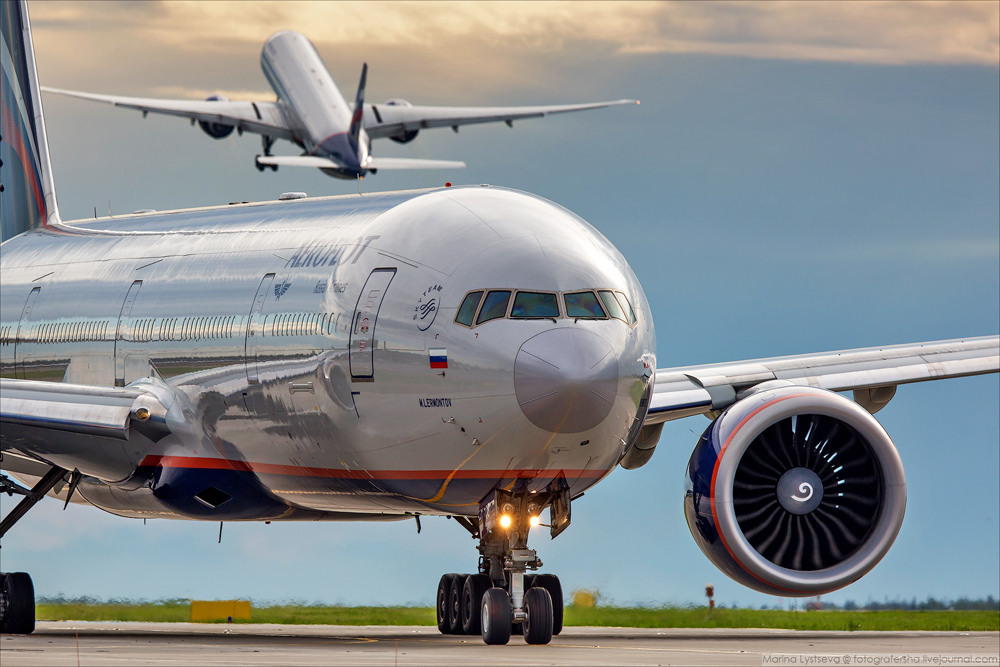
ПАСПОРТНЫЙ КОНТРОЛЬ
Для прохождения пограничного контроля необходимо предъявить заграничный паспорт. Пограничным органам ФСБ России при осуществлении пограничного контроля предоставлено право запрашивать у туристов дополнительные документы (авиабилет, посадочный талон, ваучер и т.п.), а также проводить опрос лиц, следующих через границу.
САНИТАРНЫЙ КОНТРОЛЬ
Туристам сертификат о прививках не требуется.
ВЕТЕРИНАРНЫЙ КОНТРОЛЬ
Если Вы вывозите животных, то Вам необходимо иметь комплект документов, подтверждающих, что они здоровы. Как правило, следует иметь: Ветеринарный паспорт, Справку о состоянии здоровья (выдается любой государственной ветеринарной клиникой, в справке указываются сведения о прививках по возрасту, последняя прививка от бешенства должна быть сделана не ранее, чем за год и не позднее, чем за два месяца до выезда), Справку из клуба СКОР или РКФ (в справке указывается, что собака не представляет племенной ценности, справки из других клубов вызывают вопросы на таможне). При ввозе домашних животных в Республику Кипр необходимо предъявить ветеринарное свидетельство с указанием о прививке от бешенства. Животные подвергаются ветеринарному осмотру.
При ввозе в РФ животных и птиц Вам необходимо иметь сопровождающее ветеринарное свидетельство, полученное в Государственной ветеринарной службе страны, где приобретено животное.
Запрещен ввоз на территорию Российской Федерации любых грузов животного происхождения, в том числе в ручной клади и багаже, при отсутствии письменного разрешения Главного государственного ветеринарного инспектора Российской Федерации.
Без разрешения уполномоченных органов РФ запрещено ввозить и вывозить объекты дикой фауны и флоры, находящиеся под угрозой исчезновения.
Прибытие/Отъезд
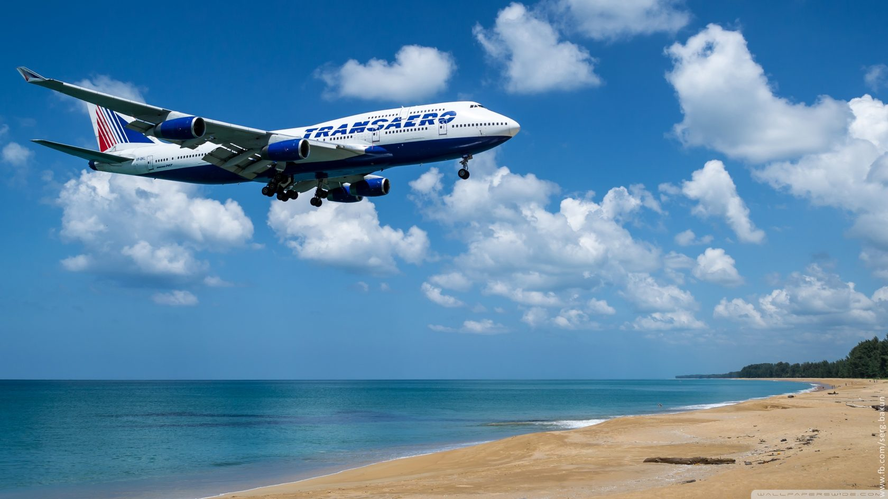
В АЭРОПОРТУ ПРИЛЕТА/ВЫЛЕТА
Внимание: въезд на территорию Республики Кипр через любой из незаконных пунктов въезда, расположенных в районах, не контролируемых правительством Республики Кипр (ок. 37% территории в северной части острова, в основном населенной турками-киприотами), является противозаконным и служит основанием для привлечения к судебной ответственности согласно законодательству Республики Кипр. Въезд на турко-кипрскую часть острова (в т.ч. север столицы - Никосии) возможен лишь через официальные пункты пропуска на т.н. «зеленой линии», контролируемой миротворческим контингентом ООН.
По прибытию в аэропорт Республики Кипр Вы должны последовательно: получить штамп (визу), пройти паспортный контроль, пройти таможенный контроль, получить свой багаж, выйти из здания аэропорта, найти встречающего гида с табличкой, предъявить гиду туристский ваучер.
Паспортный контроль
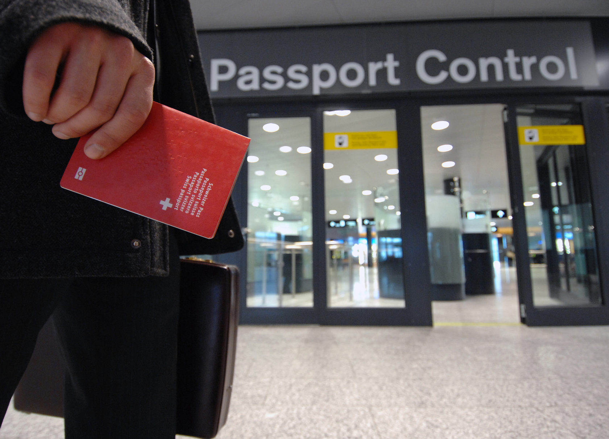
ПАСПОРТНЫЙ КОНТРОЛЬ
ВИЗА.
Согласно решению Генерального Консульства Республики Кипр граждане РФ, которые имеют действующую шенгенскую визу (категории с многократным въездом) и которые уже посетили (по ней) страну шенгена, могут совершить путешествие на Кипр без национальной кипрской визы и пребывать там в течение срока, предусмотренного шенгенской визой согласно правилам получения шенгенской визы, проставленной в их паспорте, и покинуть Кипр не позднее окончания срока действия шенгенской визы. Необходимо проверять количество дней для пребывания в стране шенгена. Дни пребывания на Кипре не вычитаются из шенгенской визы.
Граждане РФ не могут въехать на Кипр без заранее оформленной въездной визы (до начала тура на руках должно быть подтверждение выдачи визы – копия визы). Виза действительна в течение 90 дней с даты открытия.
При пересечении границы необходимо предъявить паспорт с действительной кипрской визой.
На паспортном контроле вас могут попросить предъявить сумму, указанную вами в анкете, в разделе «Сколько денег вы будете иметь в своем распоряжении во время пребывания на Кипре?»
ВНИМАНИЕ! Для граждан, не имеющих гражданства Российской Федерации, могут быть установлены иные правила въезда на территорию Республики Кипр. Получить информацию по этому вопросу следует в посольстве Кипра по месту гражданства.
Таможенный контроль
ТАМОЖЕННЫЙ КОНТРОЛЬ
Запрещена к ввозу любая сельхозпродукция (в т. ч. яблоки, апельсины и т.д.), семена и саженцы растений без фитосанитарных сертификатов. Туристы могут ввозить на Кипр без оплаты таможенной пошлины: табачные изделия - 250 г; крепкие спиртные напитки - 1 литр; вино - 2 литра; духи, одеколон, туалетная вода - 0,06-0,25 л (один флакон).
Ввоз и вывоз иностранной валюты не ограничен (декларация и документы о происхождении средств обязательны для сумм свыше 12 500 евро).
ЗАПРЕЩЕН ввоз наркотиков, огнестрельного оружия, боеприпасов, взрывчатых веществ, холодного оружия, растений, плодов, мяса птицы, медпрепаратов (за исключением предназначенных для личного использования, на которые должен быть оформлен рецепт), материалов порнографического или пропагандистского характера, печатной или видеопродукции атеистической направленности, а также товаров коммерческого назначения (исключение составляют торговые образцы).
САНИТАРНЫЙ КОНТРОЛЬ
Туристам сертификат о прививках не требуется.
ВЕТЕРИНАРНЫЙ КОНТРОЛЬ
Для ввоза/вывоза животных необходимо наличие международного сертификата установленного образца. Размещение с животными – под запрос конкретного отеля, как правило, отели в ОАЭ размещения с домашними животными не предоставляют.
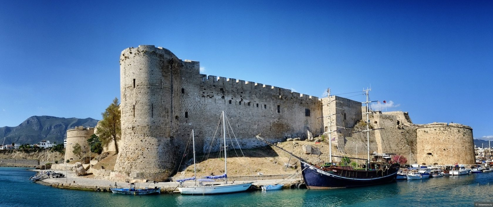
Республика Кипр
О стране
Республика Кипр является островным государством восточной части Средиземного моря. Официально территория Республики включает 98 % территории острова Кипр (остальные 2 % занимают британские военные базы Акротири и Декелия), а также близлежащие острова Агиос Георгиос, Геронисос, Глюкиотисса, Кила, Киедес, Кордилия и Мазаки. Фактически остров разделён на три части: 60 % территории острова контролируется властями Республики Кипр, 38 % — Турецкой Республикой Северного Кипра, 2 % — Британскими вооружёнными силами. С 1 мая 2004 года Кипр - Член Европейского союза.
Общая площадь государства - 9 250 кв.км. Столица Кипра – Никосия, расположенная в центральной части острова. Здесь же располагается штаб миротворческих сил ООН.
Время
Время
Местное время (GMT+2) отстаёт от московского на 1 час.
Климат
Климат
Климат на Кипре субтропический средиземноморский, характеризуется жарким, сухим летом и мягкой зимой с большим количеством солнечных дней в течение года. Считается, что самая теплая зима всего Средиземноморья именно здесь. Летом средняя температура воздуха колеблется в диапазоне от + 25°C до + 40°C, благодаря низкой влажности жара переносится легко. Зимой температура может достигать +20 °C.
Валюта
Валюта Денежная единица — евро (EURO).
Язык
Язык
На большей части территории Кипра преобладает греческий язык, на северной – турецкий. Достаточно распространен английский язык среди местного населения.
Население
Население
Население Кипра уже в течение нескольких веков состоит из двух этнических групп: греков и турок. После разделения острова подавляющее большинство греков-киприотов живёт на юге, а на севере – турки-киприоты. Общее население составляет около 900 тыс. человек, из которых греки — 650 тыс., турки — 160 тыс. человек.
Религия
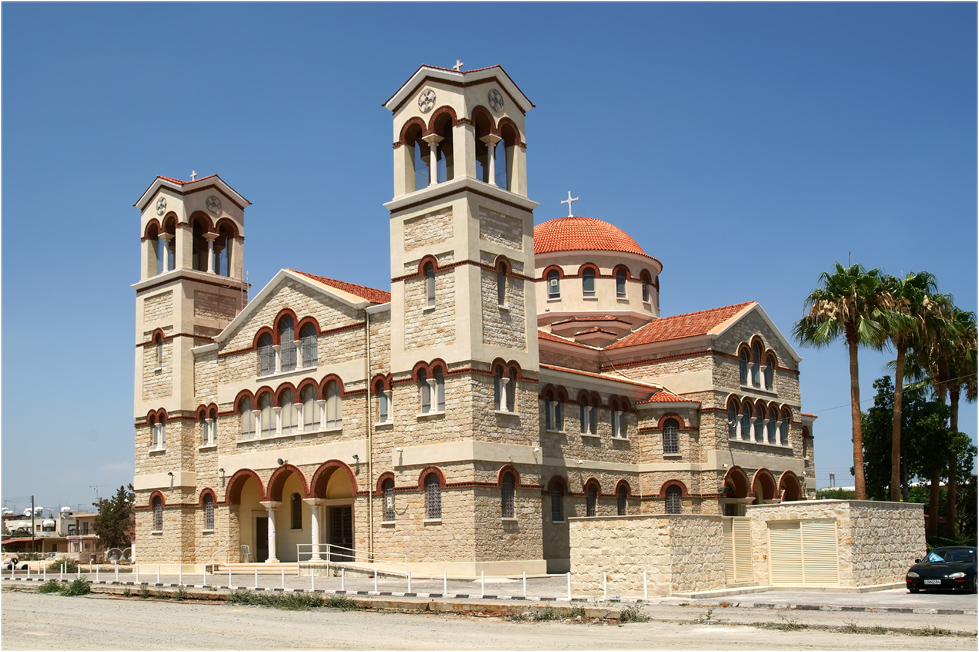
Религия Подавляющее большинство населения исповедует православное христианство (78%), этнические турки — ислам (12%)
Обычаи
Обычаи
При посещении монастырей, церквей и мечетей женщинам нужно сменить брюки на юбку и прикрыть плечи, а мужчинам всегда носить длинные брюки. Запрещено фотографировать военные объекты. Запрещается подъем археологических ценностей со дна моря или их вывоз с Кипра без специального разрешения компетентных властей. Нравы местных жителей достаточно консервативны. На острове существует время послеобеденного отдыха – сиеста (с 14.00 до 17.00), во время которой многие заведения не работают.
Праздники
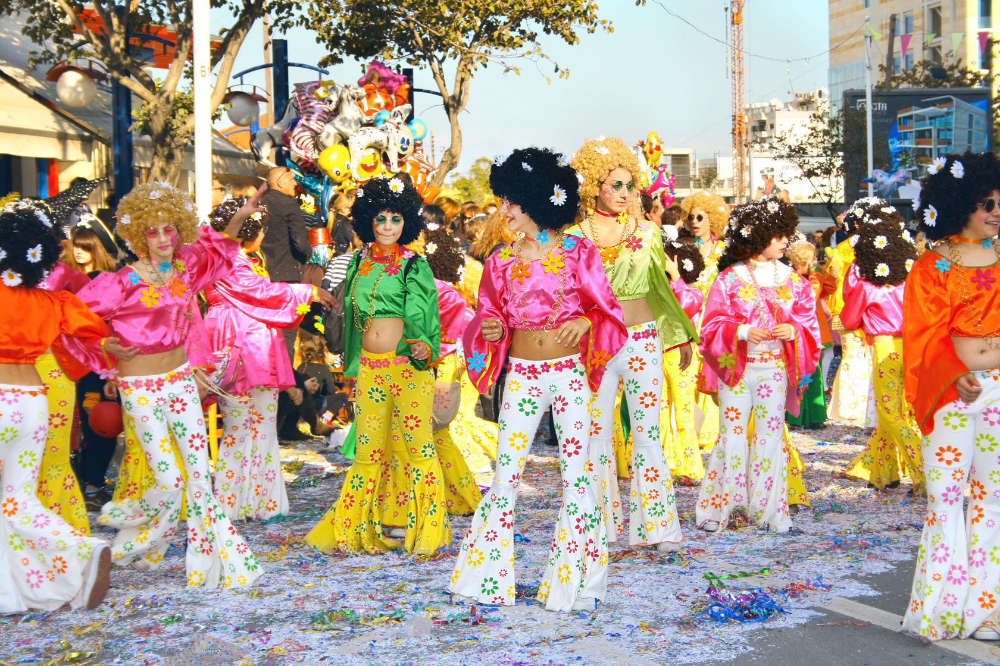
Праздники и нерабочие дни
Во время государственных праздников банки, государственные организации и многие магазины закрываются на весь день: 1 января - Новый Год; 6 января - Крещение; 26 февраля (не фиксированный день) – Зеленый (чистый) понедельник; 25 марта - День независимости Греции; 1 апреля - День начала национально-освободительной борьбы против английских колонизаторов; 16 апреля - Пасхальный понедельник; 17 апреля (дата не фиксированная) - Святой вторник; 29 апреля - Страстная Пятница; 1 мая - День весны и труда; 15 августа - Успение пресвятой Девы Марии; 1 октября - День независимости Кипра; 28 октября - Национальный день Греции; 25-26 декабря – Рождество.
Кухня
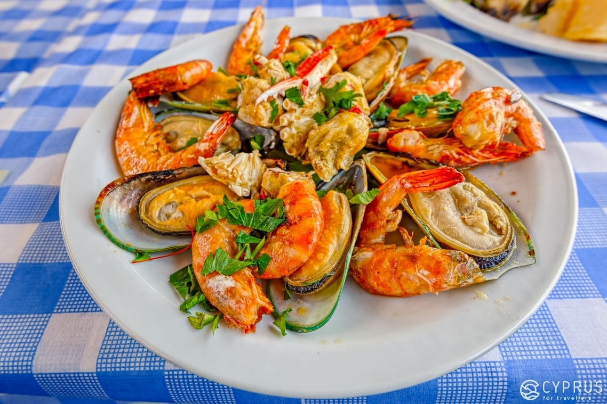
Кухня
Местная кухня представляет собой гармоничное сочетание лучших традиций греческой и восточной кухонь. Сильно выраженное греческое веяние – приготовление блюд на гриле, обилие свежих овощей, густых супов и кофе «по-гречески». Восток же привнес в кипрские блюда сладкие сочетания и пряности, такие как карри, имбирь и разнообразные специи. Многочисленные рестораны и кафе предлагают широкий ассортимент блюд как национальных, так и общеевропейских кухонь.
Приезд/Отъезд
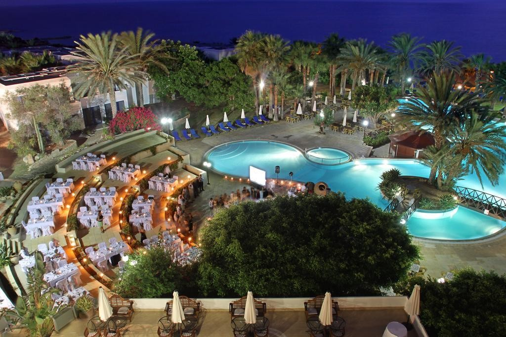
В отеле
В день приезда расселение осуществляется в соответствии с правилами, принятыми в отеле. Обычно начиная с 14-00 местного времени. Расчетный час, как правило, 12-00. Просим ознакомиться на месте с условиями предоставления услуг в отеле и придерживаться установленных отелем правил.
В день выезда до наступления расчетного часа необходимо освободить свой номер и оплатить дополнительные услуги: телефонные переговоры, мини-бар, заказ питания и напитков в номер, массаж, пользование сейфом и др. Свой багаж Вы можете оставить в камере хранения отеля и оставаться на территории отеля до прибытия трансфера. Если Вы не сдали номер до 12-00, стоимость комнаты оплачивается полностью за следующие сутки.
Электросеть
Напряжение электросети Электричество - 240 вольт, 50 Гц, розетки трехштырьковые. Необходимы переходники, которые в большинстве гостиниц можно взять под залог, или купить его в любом магазине.
Экскурсии
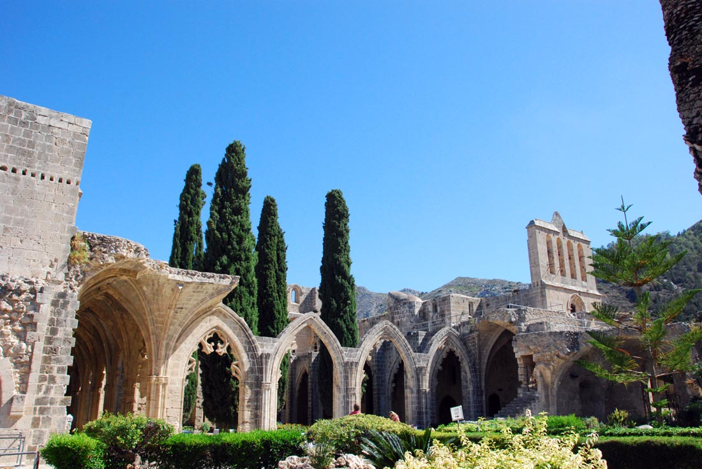
Экскурсии
Гид принимающей Вас на Кипре туроператорской компании во время первой информационной встречи в отеле сообщит Вам перечень предлагаемых экскурсий, их содержание, график проведения и их стоимость. Не рекомендуем Вам приобретать экскурсии или прочие услуги в неизвестных Вам туристских и экскурсионных агентствах. Вам может быть дана заведомо ложная информация о самой экскурсии, а также о качестве транспорта для ее организации. Вам может быть предоставлено для использования несертифицированное, неисправное или не соответствующее санитарно-гигиеническим нормам оборудование, в том числе зараженный паразитарными, грибковыми, инфекционными заболеваниями инвентарь, включая сжатый воздух в баллонах для погружения.
Магазины
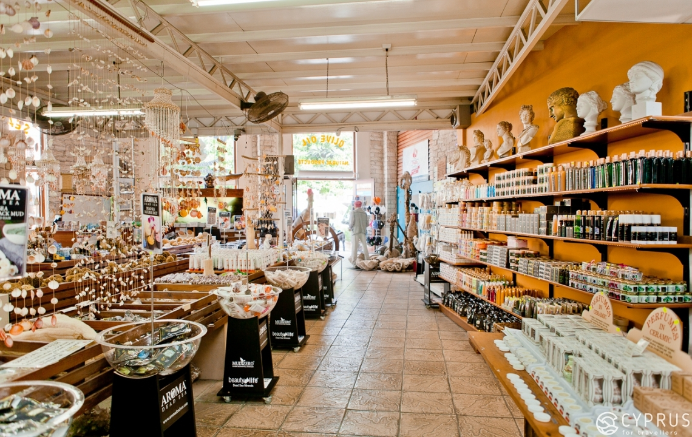
Магазины
График работы каждый магазин устанавливает сам. В высокий туристический сезон обычно гибкий график работы, с самого утра и до позднего вечера. В послеобеденное время здесь проходит сиеста. В качестве сувениров можно привезти с Кипра: сувениры ручной работы, изделия из кожи, меха, серебра, изделия из ракушек, одежда, обувь, вышивка, косметическая продукция на основе оливкового масла и розовой воды, ароматные сушеные травы, оливки, оливковое масло, местное вино «Коммандария». Возврат Tax Free в аэропорту при предъявлении покупки и Tax Free-чека, который должен быть оформлен в магазине.
Транспорт
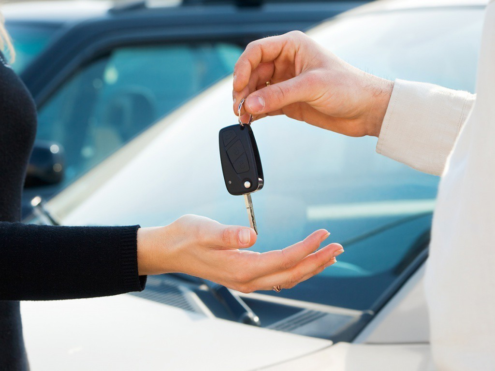
Транспорт
Движение на Кипре левостороннее. Самый дешевый вид транспорта – автобусы. Сообщение между городами осуществляется на автобусах. Автобусы ходят с 5:00 до 24:00. Они связывают как центр любого курорта с туристическим районом, так и все главные города Кипра. Между деревнями один-два раза в день курсируют сельские автобусы. Самый популярный вид транспорта – такси. Городские такси можно заказать по телефону, через ресепшн или на базовой стоянке такси. Полная стоимость проезда состоит из начального тарифа, платы за километраж и за каждое место багажа весом более 12 кг. Дополнительная плата взимается в Рождественские, новогодние, пасхальные праздники.
Аренда автомобиля
Для аренды автомобиля необходимо быть не моложе 21-25 лет (в зависимости от фирмы и марки машины), иметь действующие права и стаж вождения не менее года. Греции – левостороннее движение, знаки и разметка соответствует европейским стандартам. Пристегиваться ремнем безопасности – обязательно везде и при любых обстоятельствах. В стоимость проката автомобиля на Кипре обычно включен лишь неограниченный пробег. Дополнительно оплачиваются: налог (15 %), страховка от ущерба третьим лицам — аналог ОСАГО, страховка от всех возможных повреждений, бак бензина, детские кресла и второй водитель. На Кипре запрещено оплачивать штрафы сотрудникам полиции «на месте». Выписанные квитанции надо погашать в полицейском участке или городском муниципалитете.
Телефон

Телефон
Звонки из отеля в несколько раз дороже. Позвонить в любую точку мира можно из телефона-автомата. К автоматам разных компаний необходимы соответствующие карточки.
При звонке со стационарного телефона:
для звонка из России на Кипр набирайте 8 - 10 - (357) - (код города) - номер городского телефона;
для звонка с Кипра в Россию набирайте (00)*-7**- (код города РФ) - номер городского телефона.
При звонке с мобильного телефона:
для звонка из России на Кипр набирайте +357 - номер абонента;
Код Кипра - 8-10-357
Коды городов: Никосия - 22; Айя-Напа - 23; Протарас - 23; Ларнака - 24; Лимассол - 25; Пафос - 26.
Правила
ПРАВИЛА ЛИЧНОЙ ГИГИЕНЫ И БЕЗОПАСНОСТИ:
Перед путешествием мы советуем ознакомиться с «Полезными советами российским гражданам, выезжающим за рубеж», размещенными на сайте МИД России: http://www.mid.ru/dks.nsf/advinf
Не нарушайте правила безопасности, установленные авиакомпаниями, транспортными организациями, гостиницами, местными органами власти.
Категорически не рекомендуем Вам приобретать экскурсии и дополнительные туристские услуги в неизвестных Вам туристских и экскурсионных агентствах. Вам может быть дана заведомо ложная информация о самой экскурсии, Вам не будет гарантирована безопасность предоставленных услуг и исправность используемого оборудования, тем самым Вы можете подвергнуть себя серьезной опасности.
Перед поездкой рекомендуется сделать ксерокопии основных страниц (с фотографией, личными данными, отметкой о регистрации) заграничного и внутреннего российского паспортов и взять их с собой.
Паспорт (или ксерокопию паспорта), визитную карточку отеля носите с собой.
При возникновении транспортных аварий, конфликтов с полицией, другими органами местной власти необходимо поставить в известность представителя принимающей стороны или сотрудников Посольства/консульства России.
В период путешествия Вы не имеете права на коммерческую деятельность или иную оплачиваемую работу.
Не оставляйте детей одних без Вашего присмотра на пляже, у бассейна, на водных горках и при пользовании аттракционами.
Мойте руки перед едой. Не пейте сырую воду, особенно из открытых водоемов. Для питья рекомендуется использовать минеральную воду, которую можно приобрести в магазинах и барах отеля.
Возьмите в путешествие индивидуальную аптечку с необходимым Вам набором лекарств.
Помните, что многообразные представители животного и растительного мира могут быть не только красивыми, но и опасными. Если Вы поранились или были укушены, немедленно обратитесь к врачу.
Не рекомендуется носить с собой большие наличные суммы. Кражи денег и вещей у туристов случаются довольно часто, как и махинации с фальшивыми долларами. Не следует вынимать из кошелька на виду у всех большие суммы денег.
Покидая автобус на остановках и во время экскурсий, не оставляйте в нем ручную кладь, особенно ценные вещи и деньги.
Важные документы, наличные деньги и драгоценности лучше хранить в сейфе номера. Если в номере нет сейфа, его можно взять в аренду за плату у администрации отеля или сдать на хранение портье в сейф на стойке регистрации.
Рекомендуется сдавать ключ от номера на стойку регистрации отеля, в случае его утери поставить в известность администрацию.
Во многих отелях запрещается выносить из номера полотенца на пляж или к бассейну. Не приносите на пляж полотенца или инвентарь из номера без разрешения персонала.
Если в номере имеется мини бар, то все напитки и закуски, взятые из него, как правило, должны быть оплачены.
Потеря паспорта

В СЛУЧАЕ ПОТЕРИ ПАСПОРТА
Как только Вы поняли, что загранпаспорт потерялся, или его украли, то незамедлительно обращайтесь в дипломатическое представительство, в консульское учреждение или в представительство МИД России, которое находится в пределах приграничной территории.
Вам необходимо получить свидетельство на въезд в РФ (REENTRY CERTIFICATE TO THE RUSSIAN FEDERATION), которое еще называется временным загранпаспортом. Выдается на срок до 15 дней, для того, чтобы Вы успели купить обратный билет и улететь на родину.
Для того, чтобы Вам выдали свидетельство на возвращение в РФ, необходимо представить следующие документы:
- основной документ, на основании которого будут предприниматься какие-либо действия, это заявление о выдаче свидетельства (образец заявления)
- две фотографии цветного или черно – белого исполнения. Размер должен соответствовать 35х45 мм на четком фоне с четким изображением лица.
- обязательно понадобится Ваш внутренний паспорт РФ, так же возможно предоставление других документов для подтверждения своей личности, это водительские права или служебное удостоверение.
Вернувшись в Российскую Федерацию, в трехдневный срок необходимо сдать свидетельство в организацию, выдавшую паспорт (ОВИР, МИД).
Все вышеперечисленные документы регламентированы пунктом 20 Приказа МИД России от 28.06.2012 года № 10304.
Посольство
Посольство Российской Федерации в Республике Кипр:
Угол улиц Айос Прокопиос и Архиепископа Макариоса III
2406 Энгоми, Никосия, Кипр
а/я 21845, 1514 Никосия, Кипр
Телефоны: (357) 22-774622, 22-772141, 22-772142
Факс: (357) 22-774854
Адрес электронной почты: russia1@cytanet.com.cy
ПОСОЛЬСТВО РЕСПУБЛИКИ КИПР В РОССИЙСКОЙ ФЕДЕРАЦИИ:
Адрес: Москва, ул. Поварская, 9
Тел.:+ 7 499 575 03 10, +35722651500
Факс: + 7 499 575 03 11
ЖЕЛАЕМ ВАМ ПРИЯТНОГО ПУТЕШЕСТВИЯ! По всем вопросам свяжитесь с нами любым удобным способом:
E-mail: trohin.zh@yandex.ru
Телефон: +7 (977) 730 95 22
Соцсети: Вконтакте | Instagram | Telegram
ИНН 503613656680 / ОГРН ИП 315507400016056
город Москва, Щербинка ул. Юбилейная д.3а